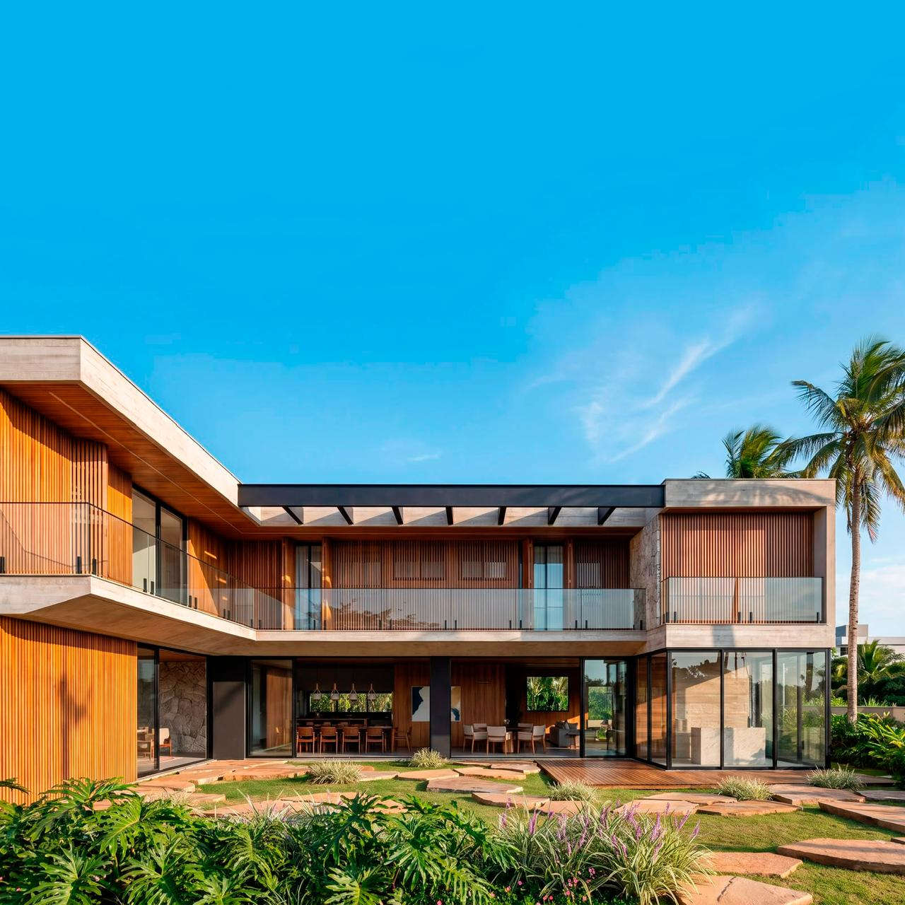
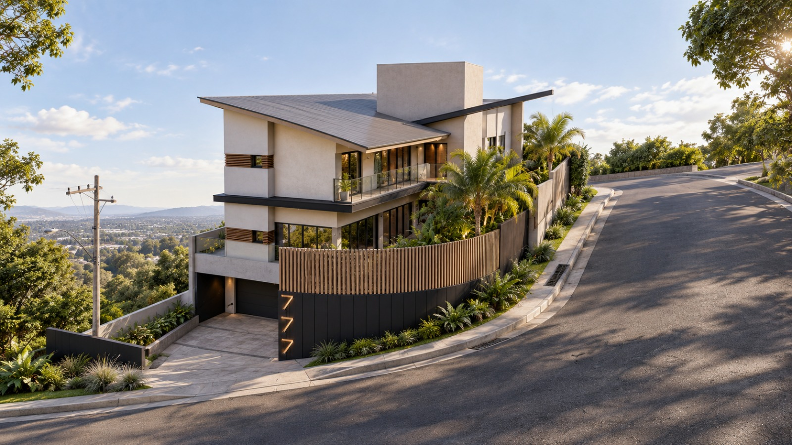
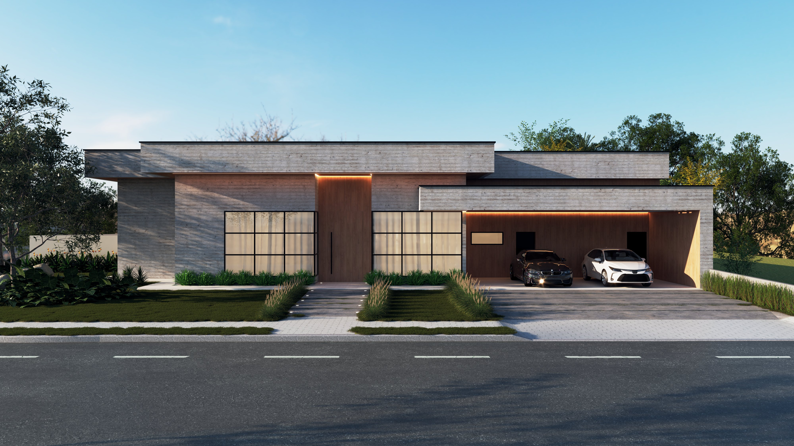
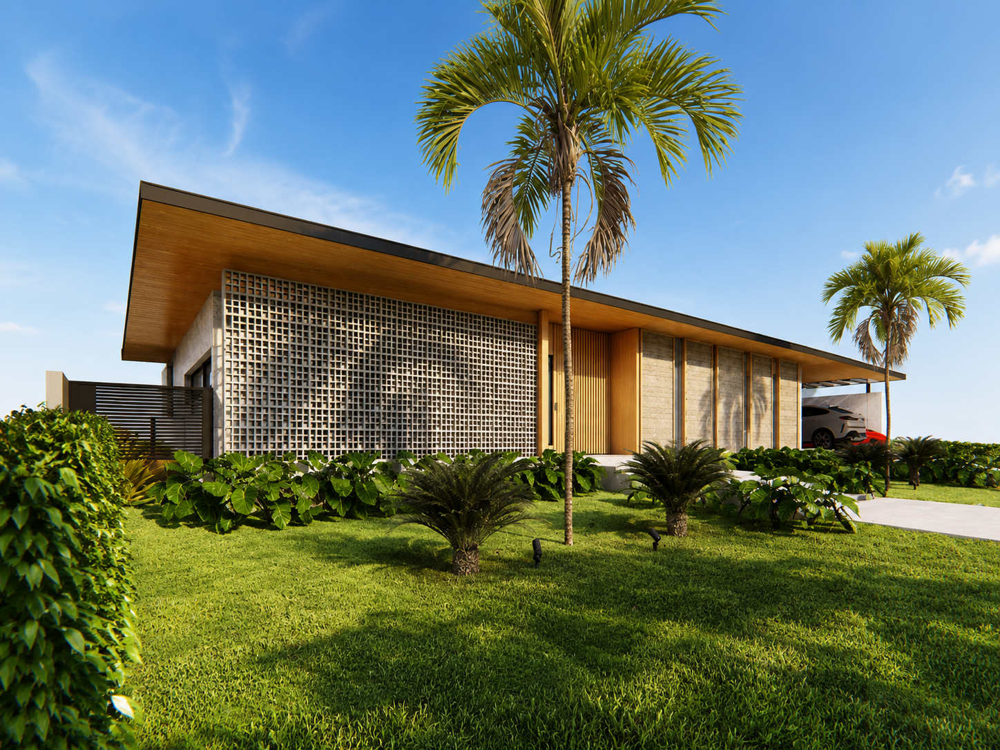

Projetos
Conheça alguns dos projetos desenvolvidos pela Riazo Engenharia.
PROJETO | I.M — MORADA DAS FLORES
Condomínio Residencial Morada das Flores — Santana de Parnaíba/SP

Projeto estrutural desenvolvido para uma residência de alto padrão, com arquitetura arrojada, grandes vãos livres e balanços marcantes, exigindo uma solução estrutural cuidadosamente integrada à proposta arquitetônica. Um dos principais desafios do projeto foi a região da garagem e dos grandes balanços da residência. Como solução, foi adotado um tirante estrutural no pavimento superior, responsável por auxiliar na sustentação do balanço e permitir maior liberdade no pavimento térreo, reduzindo interferências de pilares na área da garagem. A solução foi desenvolvida em concreto armado, buscando conciliar segurança, desempenho estrutural e estética, preservando a leveza e a imponência da arquitetura. O resultado é uma estrutura tecnicamente eficiente, capaz de viabilizar uma arquitetura ousada sem comprometer a funcionalidade dos espaços.
Arquitetura: Studio Navaz Arquitetura
Engenharia: RIAZO Engenharia
Projeto Estrutural • Hidrossanitário • Elétrico
Santana de Parnaíba/SP
PROJETO | D.J. — BOSQUES DOS JUNQUEIRAS
Condomínio Bosques dos Junqueiras — Tatuí/SP

Projeto desenvolvido para uma residência de alto padrão com 557,76 m² de área construída, distribuída em pavimento inferior, térreo e superior, além de piscina e spa. A estrutura foi concebida para atender às exigências arquitetônicas da residência, contemplando vãos de até 10 metros em concreto armado e uma solução integrada ao muro de arrimo, garantindo segurança, estabilidade e melhor aproveitamento do terreno. No projeto hidrossanitário, foi adotado o sistema manifold para distribuição de água, proporcionando uma instalação mais organizada, setorizada e eficiente, além de facilitar futuras manutenções e elevar o nível técnico da solução hidráulica da residência. O conjunto dos projetos foi desenvolvido de forma integrada, buscando unir desempenho, racionalização, segurança e sofisticação técnica, compatíveis com o padrão da arquitetura proposta.
Arquitetura: Cariati Arquitetura e Gestão
Engenharia: RIAZO Engenharia
Projeto Estrutural • Hidrossanitário • Elétrico
Tatuí — SP
PROJETO | A.A. — RESIDENCIAL VILA TOSCANA
RESIDENCIAL VILA TOSCANA — Votorantim/SP

Projeto estrutural de uma residência de alto padrão, com dois pavimentos e piscina em concreto armado. A concepção estrutural foi desenvolvida buscando o melhor equilíbrio entre segurança, desempenho e custo-benefício, adotando soluções que respeitam e valorizam a arquitetura proposta. Entre as estratégias utilizadas, destaca-se a eliminação de muros de arrimo internos e a utilização de caixão perdido, permitindo uma solução estrutural mais eficiente e econômica para as características do terreno e da edificação. O resultado é uma residência robusta, com uma arquitetura marcante e uma estrutura racionalizada, pensada para proporcionar segurança, facilidade executiva e economia na obra.
Arquitetura: Suném Construtora
Engenharia: RIAZO Engenharia
Projeto Estrutural • Hidrossanitário • Elétrico
Votorantim — SP
PROJETO | J.P. — COND. NINHO VERDE I
COND. NINHO VERDE I — Porangaba/SP

Projeto estrutural de uma residência térrea de alto padrão, ampla, espaçosa e de presença marcante, desenvolvida em concreto armado com cobertura metálica. Um dos grandes destaques do projeto é a concepção da cobertura, pensada para proporcionar o efeito de um telhado flutuante, trazendo leveza visual e valorizando a arquitetura da residência. Além da estrutura principal, todo o sistema de cobertura foi estudado de forma integrada, contemplando a estrutura metálica, fechamento em OSB e soluções de impermeabilização, buscando desempenho, durabilidade e eficiência construtiva. O resultado é uma residência imponente, com grandes espaços e uma solução estrutural cuidadosamente pensada para unir arquitetura, segurança, funcionalidade e qualidade executiva.
Engenharia: RIAZO EngenhariaProjeto Estrutural • Hidrossanitário
Porangaba — SP
Engenharia Integrada
Projetos desenvolvidos de forma coordenada para integrar diferentes disciplinas e contribuir para uma execução mais organizada e eficiente.
Projetos Estruturais
Soluções estruturais desenvolvidas com foco em segurança, desempenho, economia e liberdade arquitetônica.
Projetos Hidrossanitários
Instalações organizadas e eficientes, planejadas para facilitar a manutenção e o uso da edificação.
Projetos Elétricos
Projetos desenvolvidos com foco em segurança, funcionalidade e planejamento das instalações.